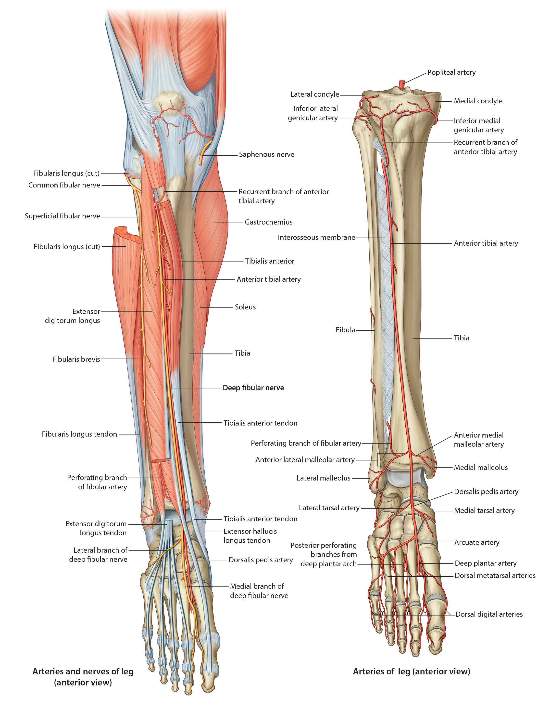

Lab 8 - Module 2 - Anatomy of the Anterior and Lateral Compartments: Page 1 of 3
READINGS:Gray's Anatomy for Students (Fourth Edition): Pages: 624-627 |
×

Nerves and Vessels of the Anterior Compartment
|  |
| Tap on image to enlarge |
| Anterior compartment is located anterior to the interosseous membrane between the lateral surface of the tibia and anterior crural intermuscular septum. It contains the dorsiflexors of the ankle and extensors of the toes. |
| Begin with an anterior view of the Anterior Leg. |
| Add the Anterior Tibial veins which is a paired system parelling the anterior tibial artery. . |
| The Superficial Fibular Nerve (Peroneal) . (NOT IDENTIFIED IN THIS CADAVER) |